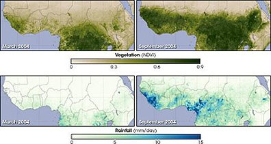

Anglais · Première technologique · lycée général et technologique · LVA and LVB · B1-B2 · Lesson 6 of 8
Lesson 6. The Ecologist's Warning
Step of the problématique: J'anticipe. What does the scientist foresee, and what does he fail to foresee?
Timing (55 minutes, timed on 52)
| Stage | Time | Activity | Skill |
|---|---|---|---|
| 1 | 6 min | Two mid-sequence talks, continued. | EOC |
| 2 | 8 min | Images: Banshee Hill, Oregon; then a Sahel vegetation record (NASA), and a satellite view of the Namib. A dune moves. What can people do? | EOI |
| 3 | 10 min | Listening: "Kynes's dream" (teacher-written text). | CO |
| 4 | 12 min | Reading Q5, Q6 and Q9. | CE |
| 5 | 10 min | Dilemma in fours: should the planet be made green, even if the Fremen way of life disappears? | EOI |
| 6 | 6 min | An ecologist's note, spiral turn 4, homework. | EE |
Stopping point
After stage 4. The dilemma can open Lesson 7 if needed.
Emergency exit (8 minutes)
The listening, Q5, and one sentence from each student: "If..., then...".
Stage 1. Two talks
Two mid-sequence talks, with one follow-up question each. The class listens for the quotation and for the answer to "who writes the legend?"
Stage 2. A dune that moves, and a plan that takes time
Look at these three images, in this order. First, a real dune in Oregon, near the coast where Herbert planned an article. Then a scientific record of vegetation in the Sahel, season after season. Then a satellite view of the Namib. A dune moves. What can people do? What takes a year, and what takes a century?



Stage 3. Listening: Kynes's dream
Listen twice. Liet-Kynes is the Imperial planetologist.
Listening text, for the teacher (do not display during the first listening)
Read at natural speed, twice. Written for the sequence.
Liet-Kynes is the Imperial planetologist, a scientist sent to study Arrakis. His father dreamed of changing the planet: catching the water, planting grasses on the dunes, and one day making Arrakis green. The Fremen adopted this dream, and Kynes became one of their leaders. But a plan that takes centuries needs patience, and a hero who promises everything now can destroy it.
B1 pathway
Complete: "If the Fremen follow a hero, they might..." Choose two endings from the box, then write one of your own: lose their voice / win a war / forget the long plan / gain water quickly.
B2 pathway
Write a conditional chain of four links ("If..., ... would...; if ..., ..."), ending with a consequence for the desert.
Stage 4. Reading Q5, Q6 and Q9
"No more terrible disaster could befall your people than for them to fall into the hands of a Hero."
Q5. Book II, the chapter of Liet-Kynes dying in the desert. The father's voice, inside the son's dying mind. Read Kynes's last two pages in your edition."the most persistent principles of the universe were accident and error"
Q6. The same chapter, final line. Read the last paragraph of the chapter."the highest function of ecology is the understanding of consequences"
Q9. Appendix I, "The Ecology of Dune".Text intelligence. Q5 is the father's voice inside the son's dying mind. The warning comes from science, not from religion, at the very moment when the religious story is winning. Q6 closes the chapter on "accident and error": the scientist loses faith in order. Why does Herbert give the strongest warning to a dying man, in what the chapter presents as a remembered lesson?
Teacher's note on Q5, Q6 and Q9
Check all three in your edition. For Q9, some epigraphs give a shorter form, "understanding consequences", without "the". Use your wording. The filled spiral on this death scene is on the presentation page and in the teacher's guide: idea on the outer side, reference on the inner side. The expected kind of tip (not to be given in advance) is of this order: "A people can be saved by the story that enslaves it."
Key, a direction for Q5 to Q9
Q5 warns that a Hero can be the worst disaster for a people, not their safety. Q6, at the end of the same chapter, withdraws the idea of a clean, ordered plan: accident and error last. Q9, from the ecology appendix, makes understanding consequences the highest task. Together they anticipate the cost of following Paul: a victory that may destroy the slow plan, and a people that may lose its voice.
Stage 5. A dilemma
In fours: should the planet be made green, even if the Fremen way of life disappears? Every student speaks at least once. Use a conditional.
Grammar. Hypothesis and prediction
First and second conditional; might, could, will, would. Example (already corrected): the spice / disappear → the Guild / cannot travel. → If the spice disappeared, the Guild could not travel.
Exercise 5.
- the Fremen / follow Paul → the empire / fall
- the planet / become green → the sandworms / die
- a hero / take power → the long plan / stop
Key, exercise 5
a) If the Fremen follow Paul, the empire will / might fall (first conditional, a real possibility), or: If the Fremen followed Paul, the empire would fall. b) If the planet became green, the sandworms would die. c) If a hero took power, the long plan would stop. Common error: would in the if-clause.
Expanding your vocabulary
An ecologist, ecology, an ecosystem, a consequence, to foresee, to transform, terraforming, a long-term plan, irreversible, a warning, to warn against.
Written trace and homework
Ecologist's note, 50 to 80 words: "As an ecologist, I warn that..." Spiral, turn 4: J'anticipe.
Homework. Record one minute: "A warning from Kynes to the Fremen". Learn Q5 by heart.